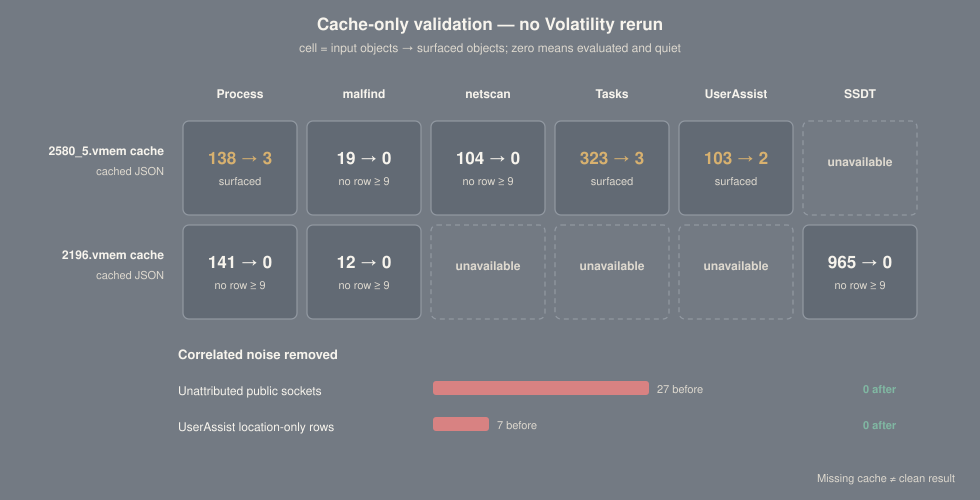

Rules you can inspect.
Scores you can defend.
A browser-readable reference for VolMemLyzer's analyst-facing hypotheses, bounded evidence scoring, cache-only validation, and extracted feature schema. Findings prioritize review; they are not malware verdicts.
Evidence is correlated before it is scored.
The engine keeps the strongest observation in each hypothesis family, sums independent families, and caps the result at 30. The default surfacing threshold is 9.
Shared ordinal ladder
The number is an ordinal evidence value—not probability, confidence, or a detection verdict. ATT&CK references identify compatible mechanisms, not confirmed adversary behavior.
Every surfaced condition, searchable.
Filter by analysis surface or hypothesis family. Conditions and weights are generated from the repository's full specification; follow ATT&CK links for official technique definitions.
| Rule | Surface / family | Weight | Exact condition | Hypothesis / ATT&CK |
|---|
Measured against two supplied cache sets.
Pure scorer functions were invoked over cached JSON. No UI, memory-image rerun, or network reputation lookup influenced the results. Unavailable artifacts are never treated as clean.
Surfaced / evaluated objects
| Cache | Process | Malfind | Network | Tasks | UserAssist | SSDT |
|---|---|---|---|---|---|---|
| 2580_5.vmem cache | 3/138 | 0/19 | 0/104 | 3/323 | 2/103 | Unavailable |
| 2196.vmem cache | 0/141 | 0/12 | Unavailable | Unavailable | Unavailable | 0/965 |
What the negative controls removed

powershell.exe (5048) → Z:\malware.exe (7936)
OP non-system location +7 · SCRIPT_CHILD_EXTERNAL external native child +6 · WOW 32-bit context +2.
PID 7936 is present in pslist, psscan, and psxview. The cache contains no PID 2580; the filename is not converted into evidence.
Normal agreement between discovery views adds no points. Only suspicious, independent hypotheses contribute.
520 extracted features without a 900-line scroll.
Features describe image-level measurements produced by registered extractors. They are separate from the analyst-facing surfacing rules above and generally require host-class baselines before interpretation.
Largest feature groups
How to read the catalog
Search by feature name, plugin group, or documented interpretation. Ratios and entropy values are measurements—not automatic indicators. Empty plugin output means unavailable coverage, not a zero-risk host.
The full semantic source remains versioned in FEATURES.md; this interface is generated from it.
| Feature | Plugin group | Documented interpretation | Description |
|---|
What this report refuses to overstate.
Credibility depends on preserving uncertainty and recording why tempting rules were rejected.